La veille, 8 h
Le levain
Rafraîchi le matin ; pétrie à 15 h, la pâte lève la nuit à 6 °C.
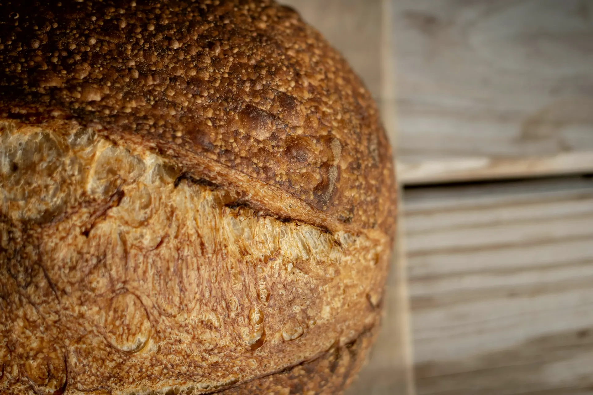
Pain au levain cuit chaque matin rue de la Fuye, à Tours. Commandez avant 18 h, retirez-le au fournil le lendemain.
Mar. – sam. 7 h – 19 h 30 dim. 7 h 30 – 12 h 30
Le seigle le jeudi, la brioche le dimanche.
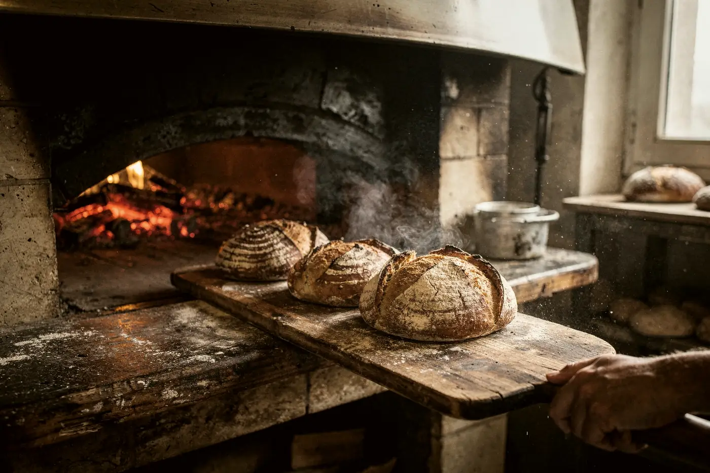
Levain naturel, farine T80 moulue sur meule, 22 heures du levain au four. Soit 1,20 € par jour.
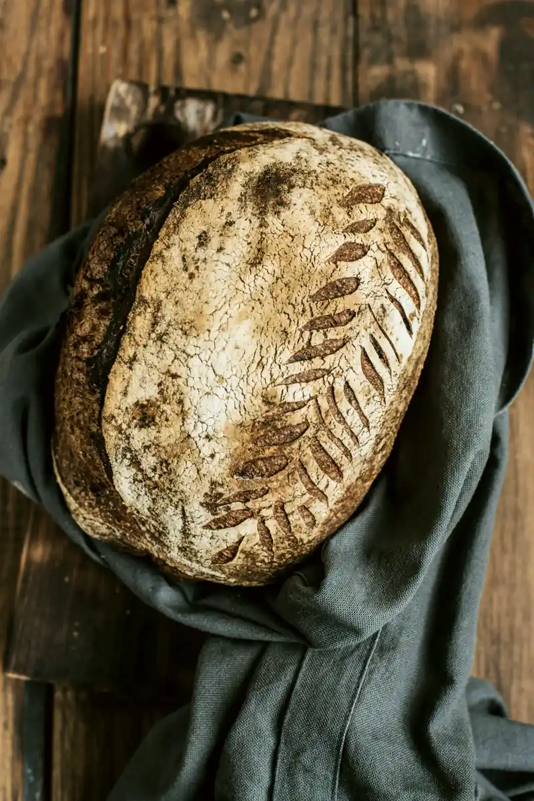
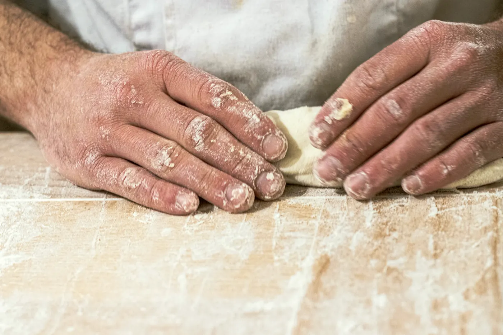
Miche de campagne1 kg · 7,20 €la demie : 3,70 €
La veille, depuis votre téléphone.
Quatre créneaux, deux le dimanche.
Votre sac porte votre prénom. Vous payez sur place.
La veille, 8 h
Rafraîchi le matin ; pétrie à 15 h, la pâte lève la nuit à 6 °C.
4 h du matin
Chaque pâton est pesé, façonné à la main, posé sur du lin.
5 h 55 – 6 h 40
Quarante-cinq minutes sur la pierre, à 240 °C.
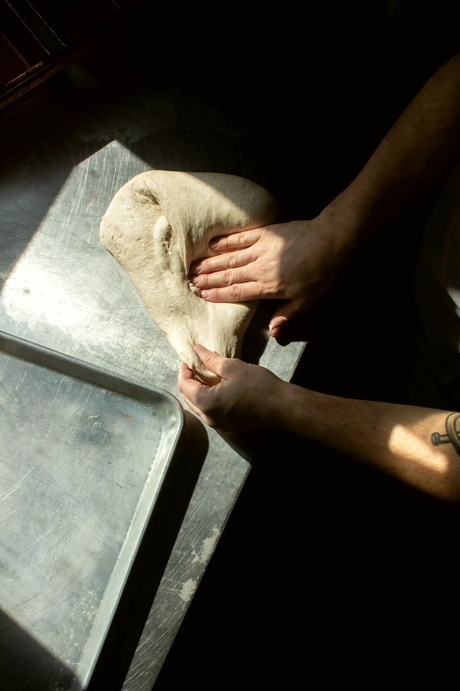
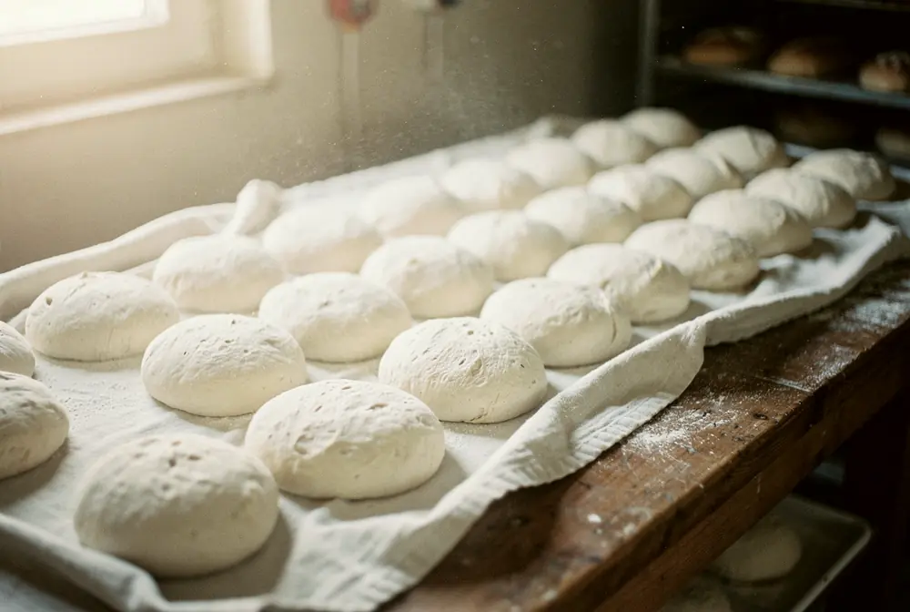
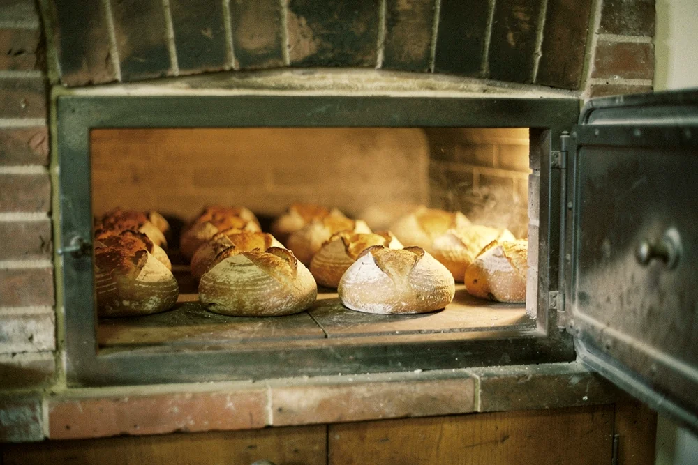
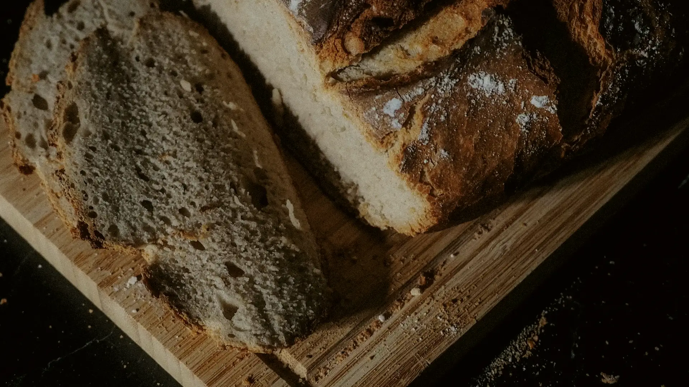
« Le vendredi, je la trouve encore meilleure que le mardi. »
« Je commande le dimanche soir pour toute la semaine. »
« Mes enfants se battent pour le quignon. »
Un blé de pays, moulu sur meule de pierre, livré chaque semaine.
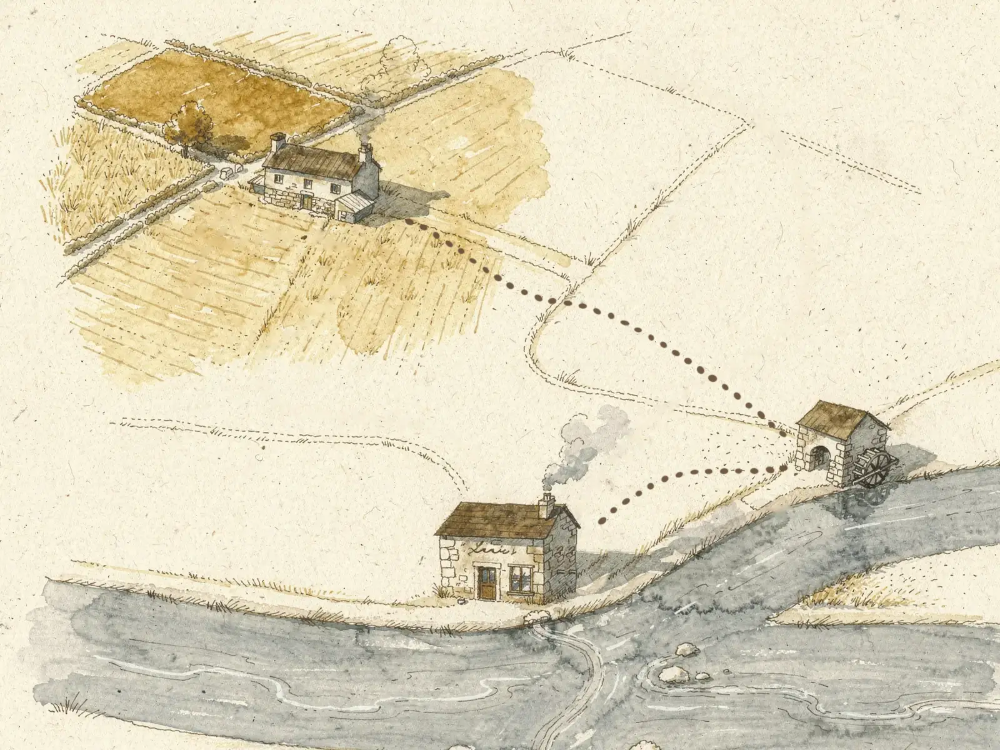
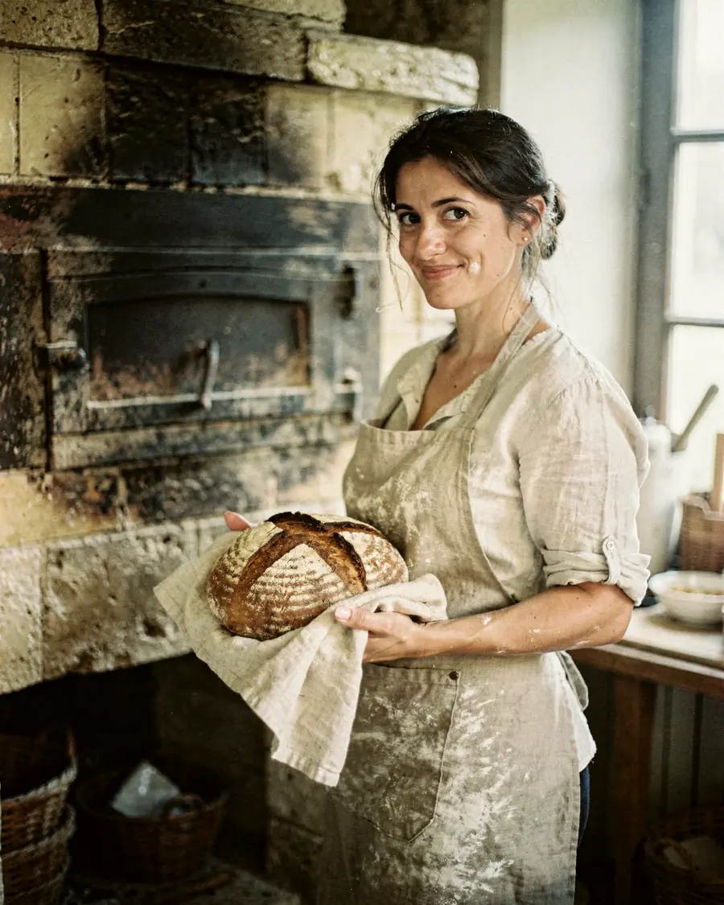
Odette a quitté la communication pour un CAP de boulanger. Fournil ouvert en 2021.
À douze minutes à pied de la gare.
Itinéraire sur OpenStreetMap (nouvel onglet)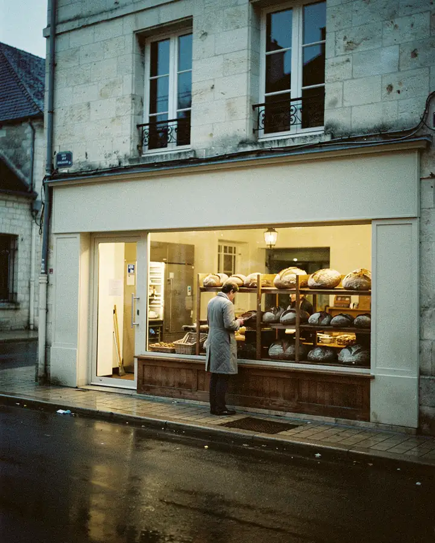
Le nôtre est doux : un levain jeune, rafraîchi le matin.
La veille avant 18 h, même le lundi.
Non. Vous payez au comptoir, par carte ou en espèces.
Non : la farine vole partout au fournil.
Inès prépare votre sac pendant la fournée.